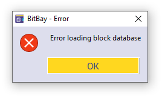

My system has the following specifications
QT Wallet, Client Wallet (and version) or Web wallet: BitBay PC QT Wallet version 3.0.1 64 bit
Operating System and version: Windows 10
If web wallet browser name and version:
If desktop wallet (Qt or Client) block # of your client and # of connections: 770000
The problem I am having is - I downloaded the QT wallet, opened it and start synchronization. Then wallet was closed. Every time, after trying to open the wallet, it start loading block index and stoped at 770000 and the next error window was shown:

So, I can’t even open my wallet.